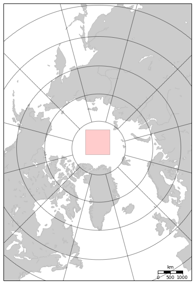

Schematic basemap map with polygons, etc
So you want to plot a schematic (or not) map, with a subregion highlighted. And the only coordinates you have are the array corner indices relative to the original data array. How do you get the true coordinates and use them for drawing a polygon?
Since I am a heavy pyresample user I will stick to it here.
from pyresample import plot, utils
# Assume we have an area definition file in the same directory
# It is possible to define basemap object from scratch though
area_def = utils.load_area('./areas.cfg', 'nsidc_stere_north_10k')
bmap = plot.area_def2basemap(area_def, resolution='l')
bmap.drawcoastlines(color='#c1c1c1')
bmap.fillcontinents()
bmap.drawmeridians(np.arange(-180, 180, 30))
bmap.drawparallels(np.arange(-90, 90, 10))
bmap.drawmapscale(-15, 40, 0, 70,1000, barstyle='fancy', yoffset=100000)
def draw_screen_poly( x, y, m):
xy = zip(x,y)
poly = Polygon( xy, facecolor='red', alpha=0.2 )
plt.gca().add_patch(poly)
# Define window size. For now let it be centered around zero coordinates
height=100; width=100
row_LR = np.int(area_def.shape[0]/2.+height/2.)
row_UL = np.int(area_def.shape[0]/2.-height/2.)
col_LR = np.int(area_def.shape[1]/2.+width/2.)
col_UL = np.int(area_def.shape[1]/2.-width/2.)
# Compute corner coordinates in map projection space
ll_x, ll_y, ur_x, ur_y = area_def.get_area_extent_for_subset(row_LR,
col_LR,
row_UL,
col_UL)
x_0, y_0 = bmap(0,90)
y = np.array([ ll_y, ur_y, ur_y, ll_y ]) + y_0
x = np.array([ ll_x, ll_x, ur_x, ur_x ]) + x_0
draw_screen_poly( x,y, bmap)
for xpt, ypt in zip(x, y):
labelx, labely = bmap(xpt, ypt, inverse=True)
if ypt-y_0>0:
ypos = ypt+200000
if ypt-y_0<0:
ypos = ypt-200000
if labelx > 0:
lon_label = 'E'
elif labelx <0:
lon_label = 'W'
labelx *= -1
label = '%.1fN;%.1f%s' % (labely, labelx, lon_label)
plt.text(xpt-450000, ypos, '%s' % label, size='x-small')
plt.scatter(xpt,ypt, alpha=0.2,c='r')
Contents of my areas.cfg:
REGION: nsidc_stere_north_10k {
NAME: NSIDC Polar Stereographic North
PCS_ID: nsidc_stere_north_10k
PCS_DEF: proj=stere, lat_0=90, lat_ts=70, lon_0=-45, k=1, x_0=0, y_0=0, a=6378273, b=6356889.449, units=m
XSIZE: 760
YSIZE: 1120
AREA_EXTENT: (-3850000.0, -5350000.0, 3750000.0, 5850000.0)};
And the output:
Conditional selection of NetCDF indices (based on time)
One little thing that I use fairly often but fail to remember is how to make a conditional selection of the steps/indices when retrieving data from a NetCDF file.
A typical reason for selective pulling of the data is to avoid filling memory with the entire dataset when in fact I need only tiny bit of it.
Here are the steps I am doing it at the moment:
- Retrieve time information from the array (the time vector is normally much smaller than 3D data I am working with).
- Perform selection of the timestamps based on some condition
- Use numpy.flatnonzero to return an array mask which is then passed further to the file handler.
time_array = file.variables['time'][:]
data = file.variables['data'][np.flatnonzero(time_array == '2007)]
However this would be too easy. The time information often comes in the format similar to the Unix epoch format, with some offset. Typical format would be ‘seconds since January 1st, 1980’. Few additional steps are necessary to make sure we can apply selection to the data array and maintain the code readable. In my case those are:
- Apply offset to the time array to convert it to the standard Unix epoch timestamps
- Convert the array to the list of datetime objects
- Finally apply your condition
# apply offset to convert the timestamp to 'seconds since 1st of January, 1970'
epoch_offset = 252460800
time_array_with_offset = time_array + epoch_offset
# convert the array to the list of datetime objects
convert_to_datetime = lambda t: datetime.datetime.fromtimestamp(t)
datetime_list = map(convert_to_datetime, time_array)
# let's go a bit further an create a list with years only, omit other time information
years_list = map(lambda t: t.year, datetime_list)
At this point we can finally apply selection by years:
data = file.variables['data'][np.flatnonzero(years_list == '2007')
Book: First steps towards CI
Browsing twitter I stubmbled upon an interesting book:
Reliable and Fast Deployments Through Automation Your first steps towards Continuous Delivery
The book is an introduction into the principles of continious integration (CI) practices, gives a summary of what are the benefits and pitfalls of CI. It starts with the basic approaches like `git pull` and finishes with the deploying Ansible playbooks in the network sandbox managed by Vagrant.
I feel that the material is aimed at the public that is looking for where to start with the CI. The more advanced audience might find some of the chapters helpful (I personally always struggle to remember how to build Debian packages).
Bayesian Methods for Hackers
You are a skilled programmer, but bugs still slip into your code. After a particularly difficult implementation of an algorithm, you decide to test your code on a trivial example. It passes. You test the code on a harder problem. It passes once again. And it passes the next, even more difficult, test too! You are starting to believe that there may be no bugs in this code... If you think this way, then congratulations, you already are thinking Bayesian! Bayesian inference is simply updating your beliefs after considering new evidence. A Bayesian can rarely be certain about a result, but he or she can be very confident. Just like in the example above, we can never be 100% sure that our code is bug-free unless we test it on every possible problem; something rarely possible in practice. Instead, we can test it on a large number of problems, and if it succeeds we can feel more confident about our code, but still not certain. Bayesian inference works identically: we update our beliefs about an outcome; rarely can we be absolutely sure unless we rule out all other alternatives.
If you are into Bayesian statistics and applying those principled to the code you develop, this book is a must read. Seriously good introduction into Bayesian statistics with application to computational problems and PyMC, a python Bayesian statistics module.